Safety Plans Across British Columbia
Alcantara Safety Solutions serves businesses in more than 16 B.C. communities – from Vancouver and the Fraser Valley to Vancouver Island, the Okanagan, and the North. On-site work in the Lower Mainland and Island; the same fixed-fee plans delivered remotely everywhere else. Every program is written against the WorkSafeBC OHS Regulation and the industry mix of your region.
Lower Mainland – On-Site Service
Our home region. Walkthroughs, mock inspections, and supervisor briefings in person.
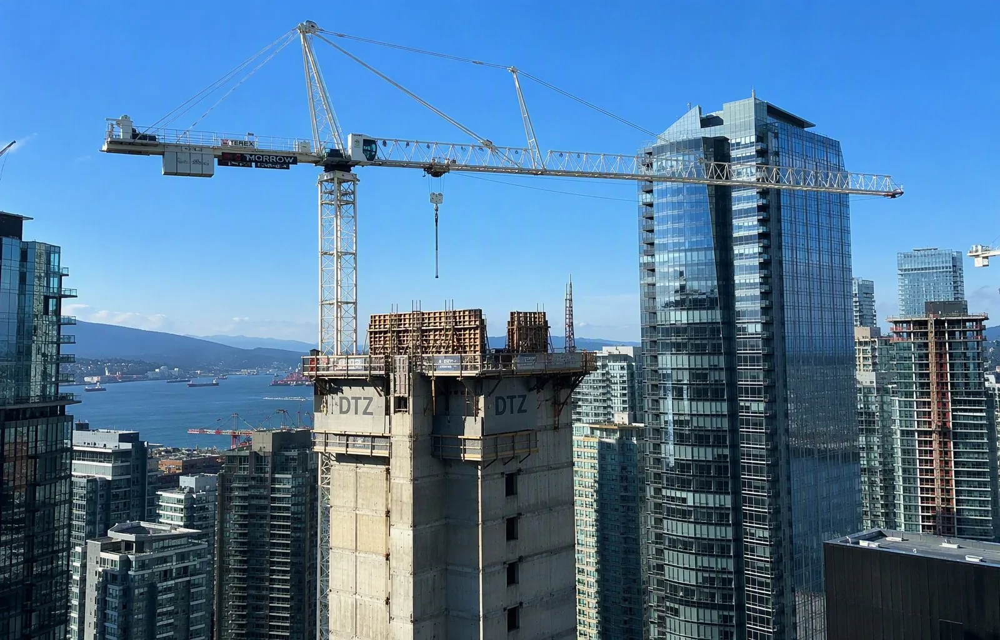
VancouverMetro headquarters region – construction, film & production support trades, property management, and warehousing along the port corridor.Explore Vancouver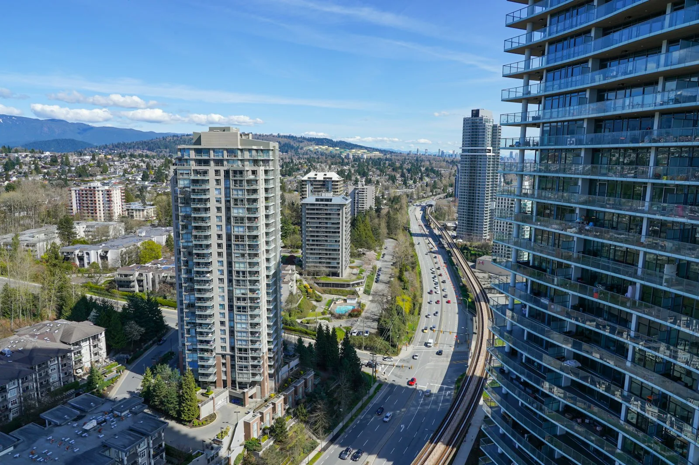
BurnabyManufacturing and light industrial around Still Creek and Big Bend.Explore Burnaby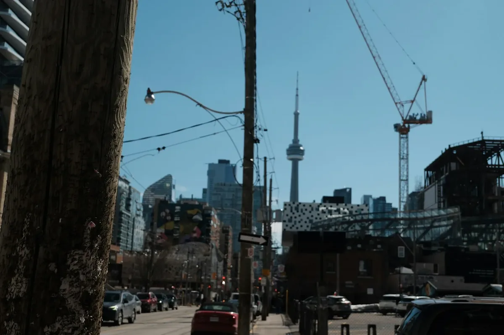
SurreyOne of B.C.'s fastest-growing construction and logistics markets – pre-qualification and COR support in high demand.Explore Surrey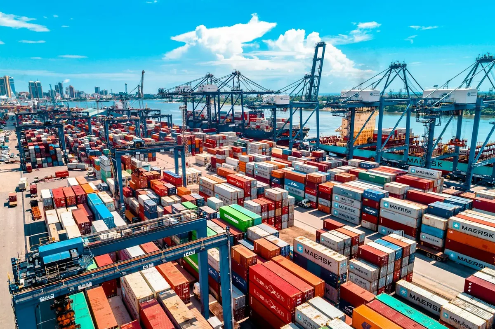
RichmondPort logistics near YVR, warehousing along the Fraser, and manufacturing.Explore Richmond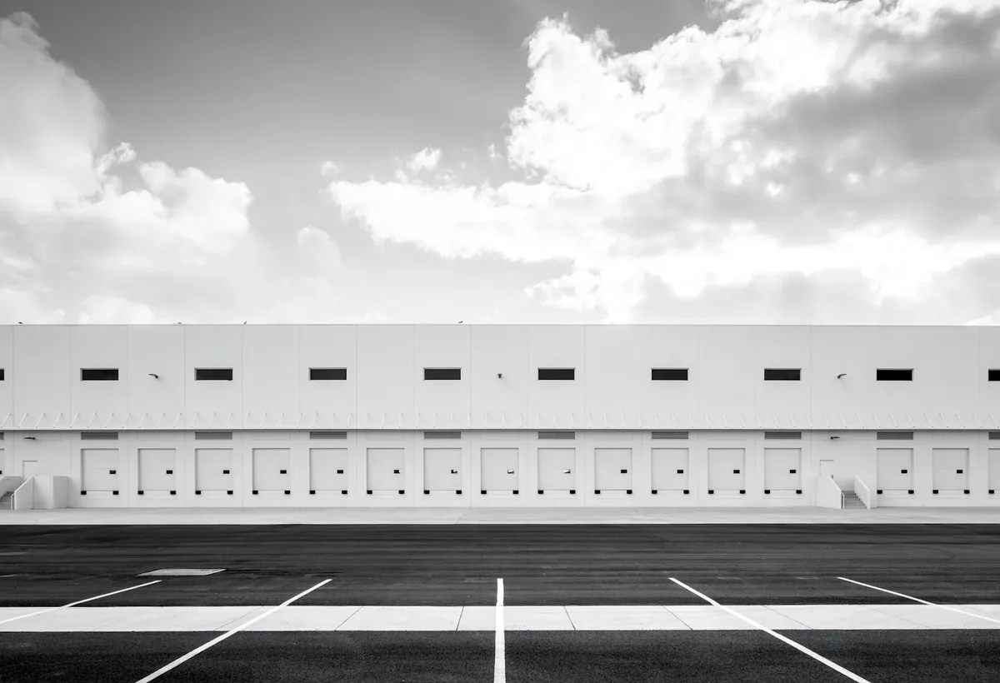
CoquitlamConstruction, trades, and municipal services across the Tri-Cities.Explore Coquitlam LangleyManufacturing, agriculture-adjacent operations, and distribution centres along Highway 1.Explore Langley AbbotsfordAgriculture, trucking, and cross-border transportation operations.Explore Abbotsford
North Vancouver & West VancouverMarine industry, construction, and property management on the North Shore.Explore North Vancouver
AbbotsfordAgriculture, trucking, and cross-border transportation operations.Explore Abbotsford
North Vancouver & West VancouverMarine industry, construction, and property management on the North Shore.Explore North Vancouver
Island Communities
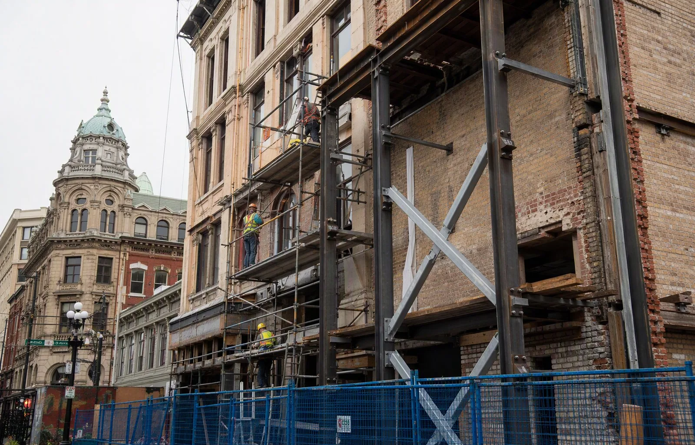
VictoriaProvincial capital region – municipal services, healthcare, offices, and hospitality.Explore Victoria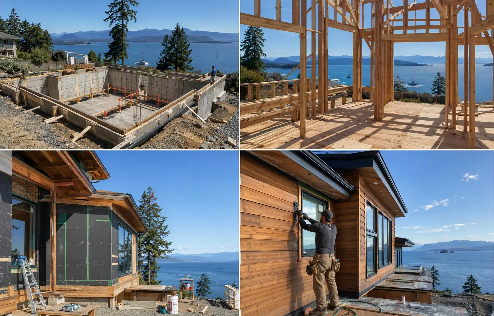
NanaimoMid-Island hub for construction, marine, and retail operations.Explore Nanaimo Courtenay & the Comox ValleyConstruction, aquaculture, and tourism-sector employers.Explore Courtenay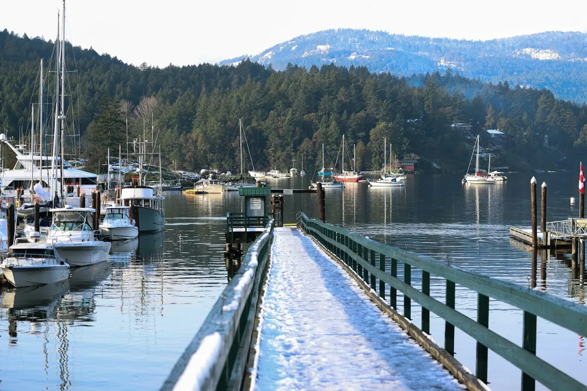
Campbell RiverForestry-adjacent industry, aquaculture, and municipal services.Explore Campbell RiverInterior & the North
Remote-first delivery with the same fixed fees – site visits scheduled where the project calls for them.
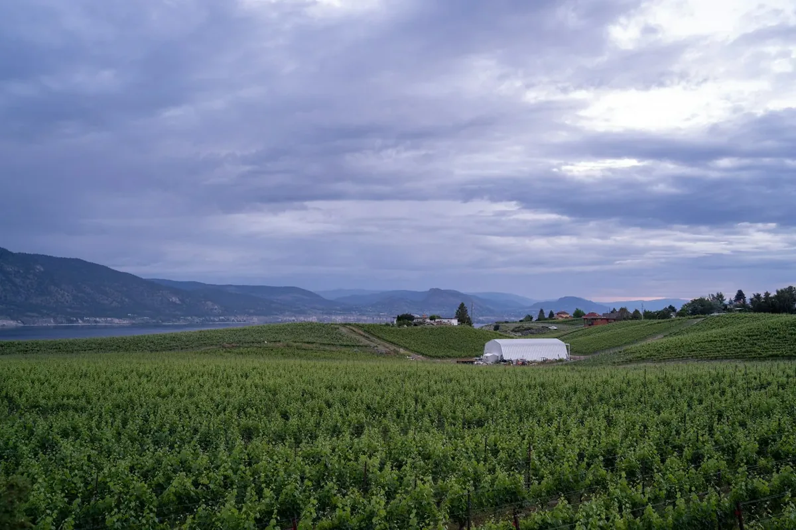
KelownaRemote-firstOkanagan construction boom, agriculture, and hospitality.Explore Kelowna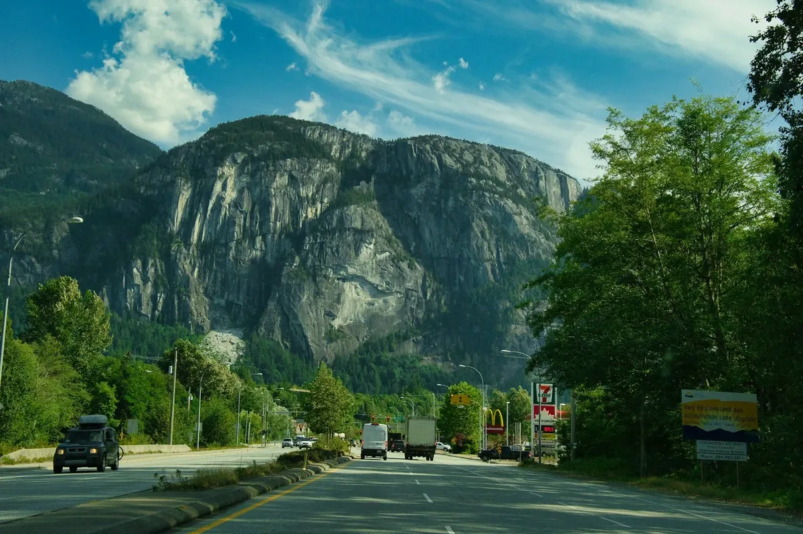
KamloopsRemote-firstTransportation & logistics at the Interior junction, plus mining-support services.Explore Kamloops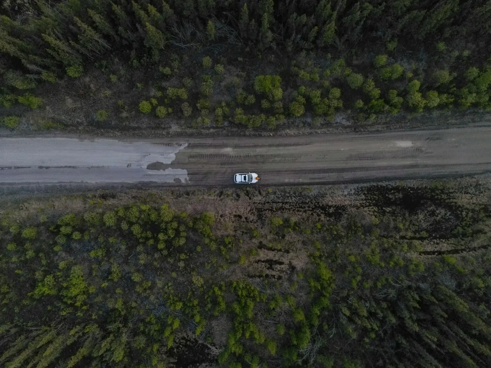
Prince GeorgeRemote-firstNorthern resource hub – forestry, oil & gas services, and municipal operations.Explore Prince George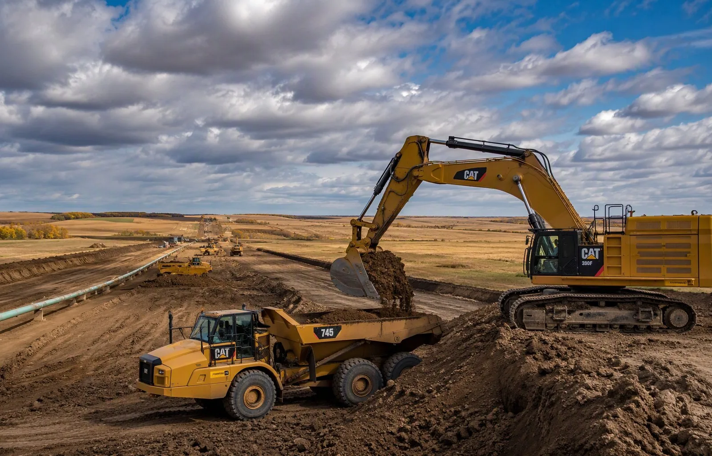
Fort St. JohnRemote-firstEnergy-sector heartland – oil & gas contractors and site-service companies.Explore Fort St. JohnService Area Questions
Both. Across Metro Vancouver, the Fraser Valley, and Vancouver Island we routinely work on-site – walkthroughs, mock inspections, and supervisor briefings are better in person. For the Interior and Northern B.C., most engagements run remotely with scheduled site visits where the project calls for it.
Plan creation costs the same everywhere in B.C. – the work is the same. If an engagement needs on-site days outside Metro Vancouver, travel is quoted transparently up front as part of your fixed fee, never billed as a surprise later.
Yes. The OHS Regulation is province-wide, but industry mix differs by region – forestry in the north, manufacturing in the Fraser Valley, hospitality in Victoria and the Okanagan. Every plan is written against your industry's requirements and your region's WorkSafeBC prevention office practices.
Yes. While this page covers British Columbia, we regularly align programs to other provincial OHS regulators – including Alberta's OHS Act – for companies that work across provincial lines.
Your Region. Your Regulations. Your Plan.
Contact us – we'll confirm exactly which requirements apply to your sites and give you a fixed quote.
Contact Us